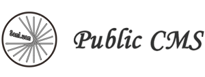

管理员
修改密码
退出
功能
报表
文件
界面组件
主面板
DWZ介绍
外部页面(页面一)
iframe navTab页面
替换页面一
页面二
不刷新页面（fresh="false"）
表单提交会话超时
navTab会话超时
dialog会话超时
常用组件
选项卡面板
弹出窗口
提示窗口
CSS表格容器
表格数据库排序+批量删除
树形菜单
滑动菜单
编辑器
日期控件
suggest+lookup+主从结构
tree查找带回
单个sortDrag示例
多个sortDrag示例
可拖动表单示例
表单组件
表单验证
按钮
文本框/文本域
下拉菜单
多选框/单选框
iframeCallback表单提交
组合应用
局部刷新分页1
局部刷新分页2
典型页面
表单录入页面
表单查询页面
工作台
工作台